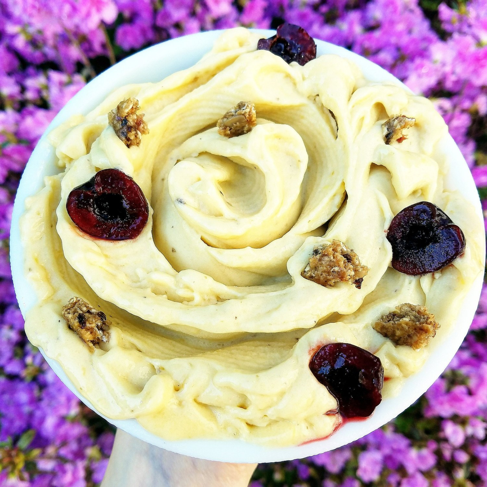
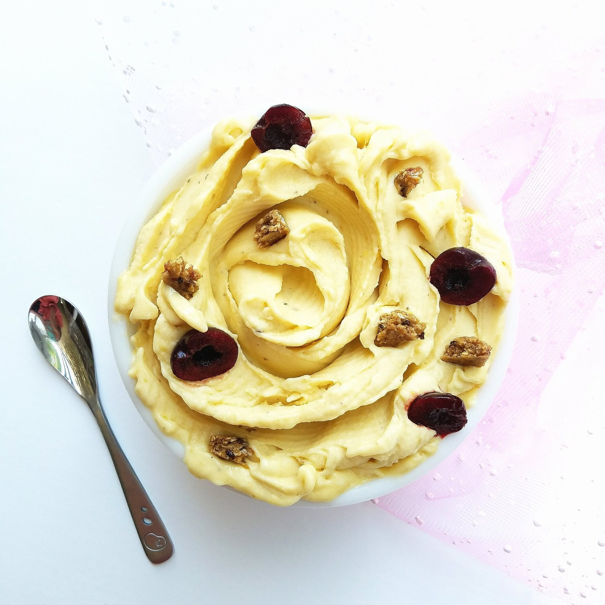

Mango Banana Ice Cream (vegan)


Happiness is...warm weather and a big bowl of mango banana ice cream for breakfast topped with cherries and cranberry acai oat bar.
I'm way too excited about two things right now. 1) Banana ice cream. It's all I've been wanting lately!! I don't know why sitting down with a big bowl with a spoon in hand, ready to dig in, is so comforting. 2) Warm weather!! All winter, every winter, I eagerly wait for warmth to return. As soon as fall hits I think "sigh.. okay.. I'll just have to look forward to spring." and that time is now!! The weather is consistently warm lately and I love it. Being able to walk out of the house without worrying about a jacket or bundling up with huge socks and layers. Just some leggings and a t-shirt and you're good to go. That's my favorite. It's great.
The flowers are pretty too. :) I've never been one to care much about trees and flowers in the spring, I just love the warmth, but for some reason this year the pretty colors are so vibrant and noticeable this year. I think I just have a new, better appreciation for nature and everything beautiful in the world. It's really nice to see. :)
Have you ever had banana ice cream? Try out this mango banana ice cream if you haven't! The mango variety of nana ice cream is the creamiest there is, in my opinion. So if you love thick and creamy, this one's for you!! You can't go wrong.
If you try it out, tag me on Instagram or Twitter because I love to see!!
Mango Banana Ice Cream (vegan)
-
2 frozen bananas
-
1 cup frozen mango chunks
Blend everything in a food processor or high speed blender (such as a ninja or vitamix). This is what I use. Be sure to scrape down the sides once or twice to include any small bits that may stray from the blades. It will be very choppy at first, but continue to let it run on high speed until a very thick and creamy ice cream forms!
Top with whatever you want :)